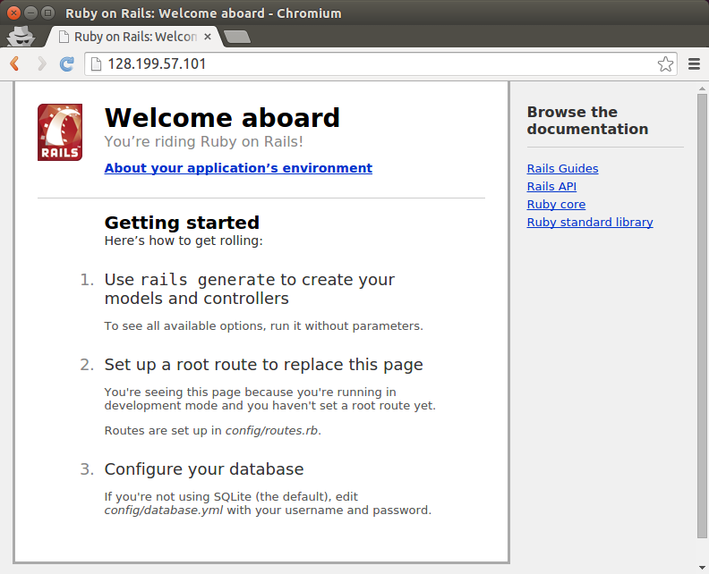

How To Deploy a Rails App with Passenger and Apache on Ubuntu 14.04
Introduction
In this tutorial, we will demonstrate how to install Phusion Passenger as your Rails-friendly web server, which is easy to install, configure, and maintain. We will integrate it into Apache on Ubuntu 14.04. By the end of this tutorial, we will have a test Rails application deployed on our Droplet.
If you prefer Nginx over Apache, take a look at how to deploy a Rails app with Passenger and Nginx on Ubuntu 14.04 by following the link.
Prerequisites
The first step is to create a new Droplet. For smaller sites it is enough to use the 512 MB plan.
You may want to choose the 32-bit Ubuntu image because of smaller memory consumption (64-bit programs use about 50% more memory then their 32-bit counterparts). However, if you need a bigger machine, or there is a chance that you will upgrade to more than 4 GB of RAM, you should consider the 64-bit version.
Be sure to use Ubuntu 14.04. At the time of this writing, Ubuntu 14.10 does not have a Passanger APT repository yet. Moreover, Ubuntu 14.04 has an additional benefit: it's a LTS version, which stands for "long term support." LTS releases are designed to be stable platforms that we can stick with for a long time. Ubuntu guarantees LTS releases will receive security updates and other bug fixes for five years.
- Ubuntu 14.04 32-bit Droplet
Step 1 — Add a Sudo User
After the Droplet is created, you should create a system user and secure the server. You can do so by following the Initial Server Setup article.
If you want to follow this tutorial, you need a basic user with sudo privileges. We will use the rails user in this example. If your user has another name, make sure that you use correct paths in the next steps.
Step 2 (Optional) — Set Up Your Domain
In order to ensure that your site will be up and visible, you need to set up your DNS records to point your domain name towards your new server. You can find more information on setting up a hostname by following the link.
However, this step is optional, since you can access your site via an IP address.
Step 3 — Install Ruby
We will install Ruby manually from source.
Before we do anything else, we should run an update to make sure that all of the packages we want to install are up to date:
sudo apt-get update
Next, install some libraries and other dependencies. This will make the installation as smooth as possible:
sudo apt-get install build-essential libssl-dev libyaml-dev libreadline-dev openssl curl git-core zlib1g-dev bison libxml2-dev libxslt1-dev libcurl4-openssl-dev libsqlite3-dev sqlite3
Create a temporary folder for the Ruby source files:
mkdir ~/ruby
Move to the new folder:
cd ~/ruby
Download the latest stable Ruby source code. At the time of this writing, this is version 2.1.4. You can get the current latest version from the Ruby website. If a newer version is available, you will need to replace the link in the following command:
wget http://cache.ruby-lang.org/pub/ruby/2.1/ruby-2.1.4.tar.gz
Decompress the downloaded file:
tar -xzf ruby-2.1.4.tar.gz
Select the extracted directory:
cd ruby-2.1.4
Run the configure script. This will take some time as it checks for dependencies and creates a new Makefile, which will contain steps that need to be taken to compile the code:
./configure
Run the make utility, which will use the Makefile to build the executable program. This step can take a bit longer:
make
Now, run the same command with the install parameter. It will try to copy the compiled binaries to the /usr/local/bin folder. This step requires root access to write to this directory:
sudo make install
Ruby should now be installed on the system. We can check it with the following command, which should print the Ruby version:
ruby -v
If your Ruby installation was successful, you should see output like the following:
ruby 2.1.4p265 (2014-10-27 revision 48166) [x86_64-linux]
Finally, we can delete the temporary folder:
rm -rf ~/ruby
Step 4 — Install Apache
To install Apache, type this command:
sudo apt-get install apache2
Yes, that’s all!
Step 5 — Install Passenger
First, install the PGP key for the repository server:
sudo apt-key adv --keyserver keyserver.ubuntu.com --recv-keys 561F9B9CAC40B2F7
Create an APT source file:
sudo nano /etc/apt/sources.list.d/passenger.list
Insert the following line to add the Passenger repository to the file:
deb https://oss-binaries.phusionpassenger.com/apt/passenger trusty main
Press CTRL+X to exit, type Y to save the file, and then press ENTER to confirm the file location.
Change the owner and permissions for this file to restrict access to root:
sudo chown root: /etc/apt/sources.list.d/passenger.list
sudo chmod 600 /etc/apt/sources.list.d/passenger.list
Update the APT cache:
sudo apt-get update
Finally, install Passenger:
sudo apt-get install libapache2-mod-passenger
Make sure the Passenger Apache module; it maybe enabled already:
sudo a2enmod passenger
Restart Apache:
sudo service apache2 restart
This step will overwrite our Ruby version to an older one. To resolve this, simply remove the incorrect Ruby location and create a new symlink to the correct Ruby binary file:
sudo rm /usr/bin/ruby
sudo ln -s /usr/local/bin/ruby /usr/bin/ruby
Step 6 — Deploy
At this point you can deploy your own Rails application if you have one ready. If you want to deploy an existing app, you can upload your project to the server and skip to the /etc/apache2/sites-available/default step.
For this tutorial, we will create a new Rails app directly on the Droplet. We will need the rails gem to create the new app.
Move to your user's home directory:
cd ~
Install the rails gem without extra documentation, which makes the installation faster. This will still take a few minutes:
sudo gem install --no-rdoc --no-ri rails
Now we can create a new app. In our example, we will use the name testapp. If you want to use another name, make sure you update the paths in the other commands and files in this section.
We will skip the Bundler installation because we want to run it manually later.
rails new testapp --skip-bundle
Enter the directory:
cd testapp
Now we need to install a JavaScript execution environment. It can be installed as the therubyracer gem. To install it, first open the Gemfile:
nano Gemfile
Find the following line:
# gem 'therubyracer', platforms: :ruby
Uncomment it:
gem 'therubyracer', platforms: :ruby
Save the file, and run Bundler:
bundle install
Now, we need to create a virtual host file for our project. We'll do this by copying the default Apache virtual host:
sudo cp /etc/apache2/sites-available/000-default.conf /etc/apache2/sites-available/testapp.conf
Open the config file:
sudo nano /etc/apache2/sites-available/testapp.conf
Edit it or replace the existing contents so your final result matches the file shown below. Changes you need to make are highlighted in red. Remember to use your own domain name, and the correct path to your Rails app:
<VirtualHost *:80>
ServerName example.com
ServerAlias www.example.com
ServerAdmin webmaster@localhost
DocumentRoot /home/rails/testapp/public
RailsEnv development
ErrorLog ${APACHE_LOG_DIR}/error.log
CustomLog ${APACHE_LOG_DIR}/access.log combined
<Directory "/home/rails/testapp/public">
Options FollowSymLinks
Require all granted
</Directory>
</VirtualHost>
Basically, this file enables listening to our domain name on port 80, sets an alias for the www subdomain, sets the mail address of our server administrator, sets the root directory for the public directory of our new project, and allows access to our site. You can learn more about Apache virtual hosts by following the link.
To test our setup, we want to see the Rails Welcome aboard page. However, this works only if the application is started in the development environment. Passenger starts the application in the production environment by default, so we need to change this with the RailsEnv option. If your app is ready for production you'll want to leave this setting out.
If you don't want to assign your domain to this app, you can skip the ServerName and ServerAlias lines, or use your IP address.
Save the file (CTRL+X, Y, ENTER).
Disable the default site, enable your new site, and restart Apache:
sudo a2dissite 000-default
sudo a2ensite testapp
sudo service apache2 restart
Now your app's website should be accessible. Navigate to your Droplet's domain or IP address:
http://droplet_ip_address
Verify that your app is deployed. You should see either your custom application, or the Welcome aboard default Rails page:

The Rails app is now live on your server.
Step 7 — Update Regularly
To update Ruby, you will need to compile the latest version as shown in Step 4 in this tutorial.
To update Passenger and Apache, you will need to run a basic system update:
sudo apt-get update && sudo apt-get upgrade
However, if there is a new system Ruby version available, it will probably overwrite our Ruby (installed from source). For this reason, you might need to re-run the commands for removing the existing symlink to the Ruby binary file and creating a new (correct) one. They are listed at the end of Step 6 in this tutorial.
After the update process, you will need to restart the web server:
sudo service apache2 restart

36 Comments